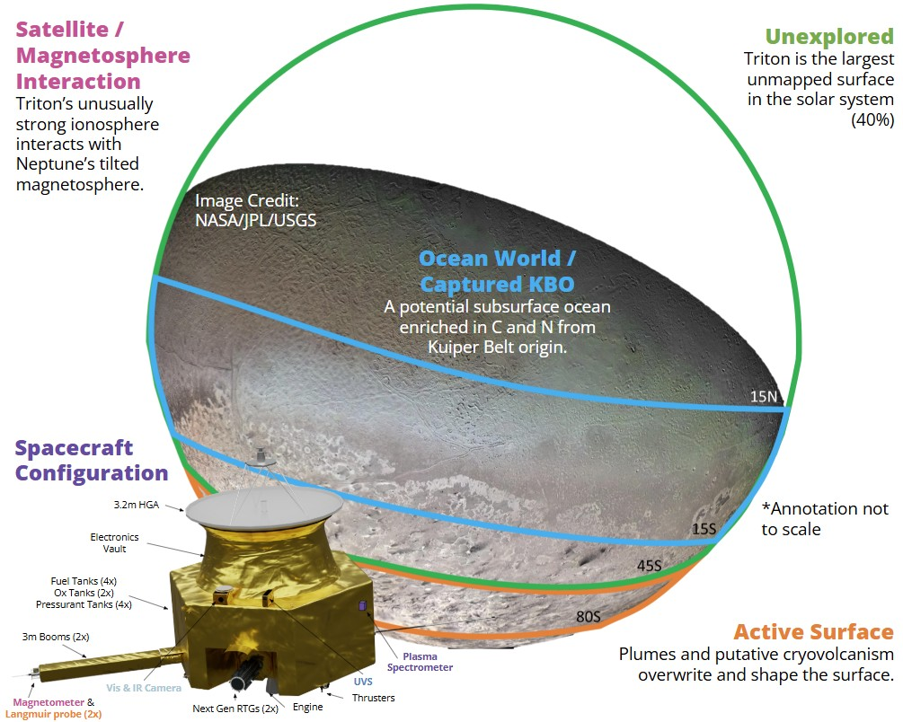
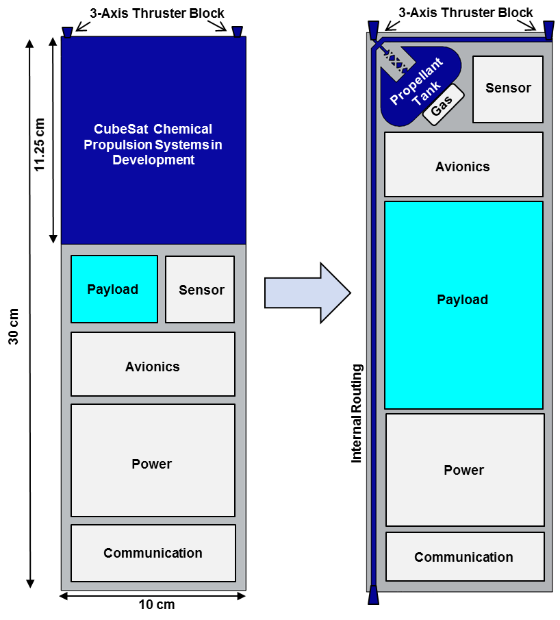
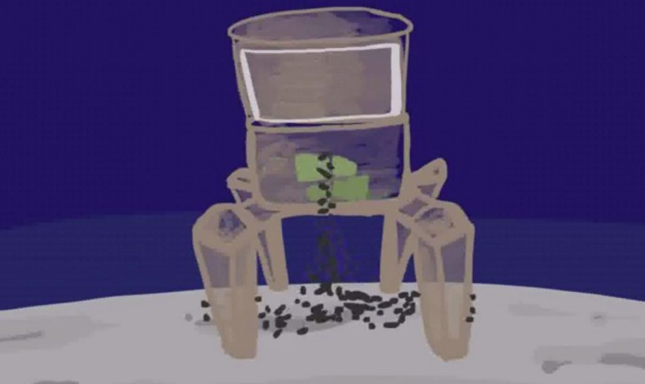
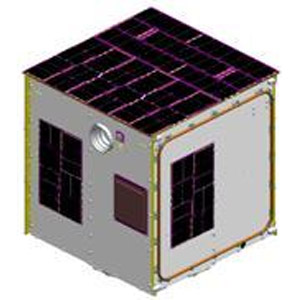
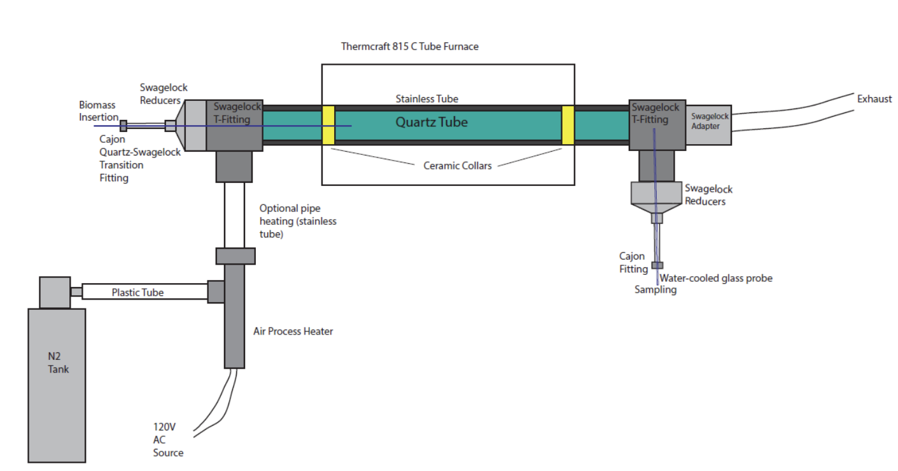
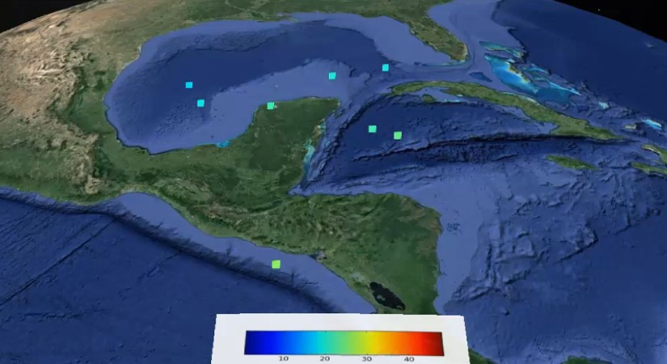

Spectral modeling in Lunar Permanently Shadowed Regions
Caltech - P.I. Dr. Bethany Ehlmann Dec. 2024-Present

Mapping Noachian terrain with HiRISE and Mastcam-Z
Caltech - P.I. Dr. Bethany Ehlmann Sept. 2024-Present

Icy Plume Deposit UV and VNIR Spectral Characterization
LASP - P.I. Dr. Greg Holsclaw Oct 2023- Aug. 2024

Spectroscopic analysis of icy plume deposit simulants in the ultraviolet and visible/near-infrared wavelength ranges to characterize composition and physical properties.
Toolbox for Research and Exploration (TREX) Field Campaign
PSI - P.I. Dr. Amanda Hendrix Oct 2022- Aug. 2024

Field testing of instruments and methodologies for planetary exploration, focusing on semi autonomous mineral identification with a drone-based hyperspectral imager science automation in a Mars-analog environment.
Nautilus: A Mission Concept to Triton
JPL PSSS - P.I. Amanda Steckel (Self) Jun 2022- Aug. 2023

Development of a multi-flyby mission concept to Neptune's largest moon Triton for the JPL Planetary Science Summer School (PSSS), focusing on science objectives, mission architecture, and instrument payload design.
Microbial Response to Radiation in High Altitude
LASP and CU Boulder - P.I. Dr. Brian Hynek Jan 2021- Jan. 2022

Study of extremophile microorganisms in high-altitude environments and their responses to radiation exposure, with implications for astrobiology and potential life on Mars.
Mars Landscape Evolution Modeling
LASP and CU Boulder - P.I. Dr. Brian Hynek Aug 2020-Present

Computational modeling of ancient Mars surface processes, particularly focusing on river valley networks and their implications for the planet's climate history.
Atmospheric Lidar
CIRES and CU Boulder - P.I. Dr. Xinzhao Chu Aug 2019- Jun 2020

Development and implementation of lidar technology for high-precision atmospheric measurements, contributing to our understanding of Earth's upper atmosphere.
Integrated Propellant Storage and Feed System
MIT Lincoln Laboratory - P.I. Amanda Steckel (Self) Oct 2017- Sep 2019

Technicial initiative funded by the air force ($200k) to design a freeform propellant delivery system for cubesats. Conference paper (PDF).
Regolith Thruster
Cornell University - P.I. Dr. Mason Peck Aug 2014- May 2015

Development of innovative propulsion technology using planetary regolith (soil) as propellant for kunar or asteroid hopper, enabling in-situ resource utilization.
VIOLET Satellite Project Team
Cornell University, AFRL - P.I. Dr. Mason Peck Aug 2010- Jan 2015

Lead integration and test of the VIOLET small satellite, which was an AFRL mission testing advanced agile attitude control systems. Design unit and spacecraft level tests (Flatsat) and associated testing equipment, lead integration in clean room, report updates to AFRL and present at formal reviews. Safety, configuration management, and quality assurance lead.
High Temperature Biomass Pyrolysis Reactor
Cornell University - P.I. Dr. Elisabeth Fisher Aug 2013- May 2014

Designed a laminar entrained flow reactor for high temperature thermal conversion of powdered biomass. Modeled insertion to verify pyrolysis conditions, as chemical compounds produced depend on temperature.
Ionospheric Satellite and Radar Data Analysis
Cornell University - P.I. Dr. David Hysell Aug 2011- May 2013

Model TEC (total electron content) waves over the Caribbean with Python and Google Earth. Analyze Ionospheric plasma density irregularities from C/NOFS satellite and Jicamarca ground radar systems.